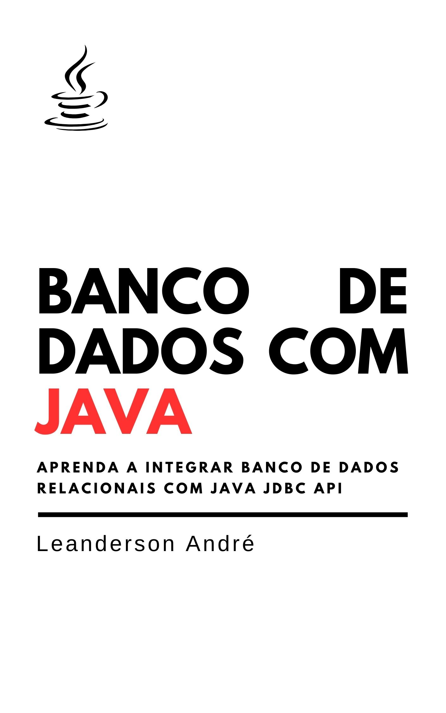

Aprenda a integrar os seus programas em Java com os principais bancos de dados relacionais. Este livro explora as principais funcionalidades da API Java Database Connectivity (JDBC) que permite conectar, incluir, atualizar, excluir e consultar dados em qualquer banco relacional. Conecte o seu programa com os bancos Mysql, SQLite, Postgree, entre outros. Aprenda a utilizar design patterns e testar códigos que integram com banco de dados. Além disso, o livro apresenta:
- Exemplos de códigos funcionais disponíveis no GitHub
- Diagramas de classe UML
- Diagramas de Entidade Relacionamento
- Scripts com SQL ANSI
- Listas de exercícios
- Questões de revisão
- Sugestões de projetos com banco de dados
Entre na fila de espera e receba via email os seguintes bônus grátis:
- Um capítulo completo e grátis
- Link do repositório com todos os códigos
- Conteúdos e dicas sobre Java via email
- Novidades sobre novos ebooks sobre Java
Todos os bônus serão enviados via email assim que estiverem finalizados.
Leanderson André
Leanderson André é engenheiro de software com MSc. em Computação Aplicada, atualmente com foco no desenvolvimento Android. Professor universitário desde 2016 na Universidade da Região de Joinville sendo responsável por diferentes disciplinas de programação.